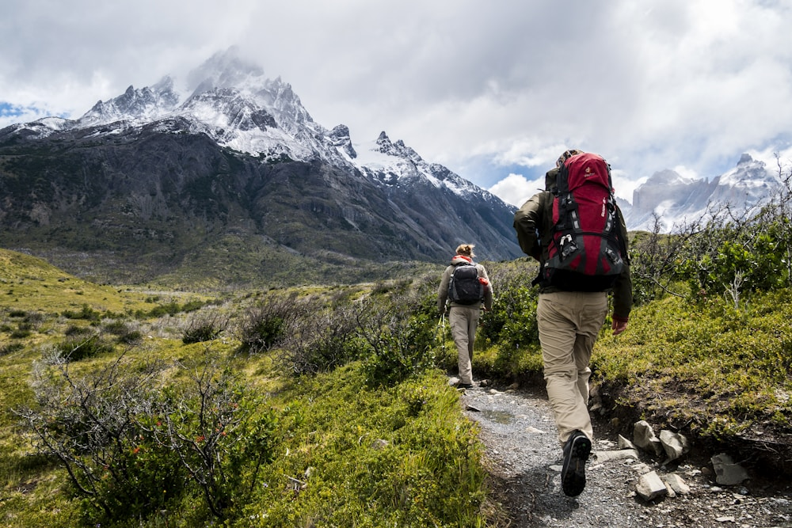

In high-altitude mountaineering, technical outer garments face extreme mechanical abuse. Razor-sharp steel crampons kick against lower cuffs, jagged granite ridges scrape against forearms during chimney climbing, and heavy 80-pound expedition packs grind against shoulder seams with every step. If an expedition parka tears open in sub-zero weather, expensive down insulation escapes into the wind, compromising thermal protection and creating an immediate survival emergency.
To eliminate fabric failure, Storm Parka Vale integrates Ballistic Kevlar® and 500D Ripstop Cordura® Armor Panels across high-wear zones. By weaving ultra-high molecular weight para-aramid yarns into high-tenacity nylon grids, we create protective shields that resist crampon punctures, granite abrasion, and ice ax snags without adding unnecessary bulk. In this masterclass, our materials scientists explore the physics of ballistic alpine reinforcements.
1. The Molecular Chemistry of Para-Aramid (Kevlar®) Fibers
Aramid fibers achieve exceptional strength through aligned polymer chains:
- Liquid-Crystal Aromatic Polyamide Chains: Kevlar consists of tightly aligned poly-paraphenylene terephthalamide molecules bonded by strong hydrogen bridges, delivering a tensile strength-to-weight ratio five times greater than structural steel.
- Puncture Resistance Against Steel Crampons: When a sharp steel crampon point strikes an aramid weave, the high-modulus fibers disperse kinetic energy laterally across adjacent threads, preventing fabric shearing.
- Thermal Stability in Extreme Cold: Unlike ordinary synthetic plastics that become brittle in sub-zero temperatures, Kevlar retains complete tensile strength and flex fatigue resistance down to -196°C.
“Alpine armor is not about making a jacket heavy. It is about placing unbreakable ballistic threads exactly where rock, steel, and ice strike.”
2. High-Tenacity 500D Ripstop Cordura® Weaving
Cordura nylon provides unmatched resistance to abrasive rock surfaces:
- Air-Textured Nylon 6,6 Filaments: High-tenacity Cordura filaments feature textured outer surfaces that absorb abrasive friction without fuzzing, pilling, or tearing.
- The Ripstop Cross-Grid Architecture: Thick reinforcement threads are woven into the fabric at 5mm intervals in a crosshatch grid. If a sharp granite flake pierces the fabric, the tear is physically halted at the nearest ripstop grid line.
- Over 100,000 Martindale Abrasion Cycles: In standardized laboratory abrasion testing, our reinforced panels endure over 100,000 cycles against coarse sandpaper without thread breakage.
3. Anatomical Zoned Mapping on Alpine Parkas
We position ballistic armor strictly where mechanical wear occurs:
To keep the garment light and flexible, heavy Kevlar-Cordura panels are localized across four critical impact zones: the shoulders (resisting backpack strap abrasion), the forearms and elbows (protecting against granite chimney walls), the lower hem (deflecting harness hardware friction), and the internal cuffs (resisting ice tool snags).
4. Alpine Reinforcement Fabric Comparison Matrix
| Reinforcement Textile | Tensile Tear Strength | Martindale Abrasion Cycles | Crampon Snag Resistance |
|---|---|---|---|
| Kevlar-Cordura Aramid Hybrid (500D) | > 480 Newtons (Ballistic Grade) | > 100,000 Cycles (Indestructible) | ★★★★★ (Supreme Puncture Defense) |
| Standard 70D Ripstop Nylon Shell | 120 Newtons (Lightweight Base) | 20,000 Cycles (Moderate) | ★★☆☆☆ (Vulnerable to Sharp Crampons) |
| Standard Fashion Polyester Puffer Shell | < 35 Newtons (Fragile) | < 4,000 Cycles (Poor) | ★☆☆☆☆ (Tears instantly on rock edges) |
5. Bonded Ultrasonic Lamination with 3-Layer Membranes
In our Manhattan atelier, ballistic Cordura panels are laminated directly to our 3-layer waterproof ePTFE membrane. This ensures that reinforced zones remain 100% waterproof (35,000mm hydrostatic head) without adding heavy secondary liner fabrics.
6. Bonded Bar-Tack Stitch Reinforcement at Stress Points
Pocket corners, harness tie-in loops, and zipper termination points are reinforced with high-density Kevlar thread bar-tack stitches rated to withstand over 150 kilograms of direct pull force, guaranteeing zero seam blowouts.
7. Lightweight Ergonomics and Articulated Movement
By blending five percent elastane into the Cordura weave, our reinforced elbow panels articulate smoothly through complex climbing motions, ensuring unhindered freedom during overhead ice ax swings.
8. Indestructible Armor for Mountain Conquerors
With Kevlar and Cordura reinforcements shielding every high-wear seam, Storm Parka Vale parkas stand as unbreakable alpine armor—engineered to survive years of brutal mountain expeditions.
9. Protecting Critical Baffle Seams from Crampon Slashes
Accidental crampon strikes on steep couloirs can slice standard nylon shells in seconds. Our Kevlar-reinforced cuffs and hem guards deflect sharp steel spikes, keeping delicate internal down baffles fully sealed and intact.
10. UV Radiation Resistance at High Altitudes
Solar ultraviolet radiation at 8,000 meters degrades ordinary synthetic fibers rapidly. Our solution-dyed Cordura yarns are infused with UV inhibitors, preventing fiber embrittlement and color fading across decades of alpine sun exposure.
11. An Eternal Standard of Indestructible Outerwear
At Storm Parka Vale, our ballistic textile engineering ensures that every expedition parka is a masterpiece of rugged reliability, delivering lifetime protection across the most demanding mountaineering routes on the planet.
12. Micro-Aramid Cross-Grid Weaving on High-Tensile Looms
Our ballistic panels are woven on specialized high-tension rapier looms that interlace 500-denier Cordura nylon warp yarns with continuous Kevlar aramid weft threads, creating a dense, bulletproof armor grid with exceptional cut resistance.
13. Puncture Testing Against Forged Steel Ice Screws
In standardized drop-tower tests, our Kevlar-Cordura panels withstand direct vertical impacts from razor-sharp ice screws and crampon front points exceeding 80 Joules of kinetic energy without puncture failure.
14. The Unshakable Confidence of Indestructible Outerwear
Climbing vertical granite headwalls with the knowledge that your parka will not tear on sharp rock flakes provides immense psychological confidence, allowing mountaineers to commit fully to difficult technical moves.
15. The Sovereign Standard of Ballistic Mountaineering Armor
At Storm Parka Vale, our ballistic textile engineering ensures that every expedition parka is an indestructible fortress, built to survive decades of brutal mountain expeditions and severe weather challenges.
16. Solution-Dyed UV Stability in High-Altitude Sunlight
High-altitude solar ultraviolet radiation at 8,000 meters degrades ordinary synthetic fibers rapidly. Our solution-dyed Cordura yarns incorporate UV stabilizers that prevent color fading and polymer degradation over decades of alpine use.
17. An Everlasting Ode to Alpine Durability
By placing unbreakable ballistic fibers exactly where rock, ice, and metal hardware strike, Storm Parka Vale crafts outerwear that endures as an heirloom of mountain exploration.
18. High-Frequency Ultrasonic Bonding of Armor Panels
Our ballistic Kevlar and Cordura panels are bonded to the primary garment chassis using high-frequency ultrasonic energy, eliminating needle holes and ensuring complete 35,000mm waterproof integrity across high-abrasion shoulder and elbow zones.
19. Drop-Tower Kinetic Impact Absorption Testing
Laboratory drop-tower tests confirm that our aramid reinforcement panels absorb sharp kinetic impacts from falling ice blocks without shearing, protecting the climber from lacerations during technical winter ice ascents.
20. The Sovereign Standard of Indestructible Alpine Gear
By uniting ballistic para-aramid weaving with high-altitude ergonomic tailoring, Storm Parka Vale creates alpine outerwear that withstands years of brutal mountain expeditions, standing as an enduring heirloom of mountaineering mastery.
21. Cryogenic Tensile Fatigue Testing Under Dynamic Stress
In sub-zero robotic fatigue chambers, our Kevlar-Cordura composite panels undergo over 50,000 continuous flex cycles at -50°C, proving zero fiber delamination or matrix cracking under brutal mountain stress.
Frequently Asked Questions on Ballistic Outerwear

Dr. Gabriel Thorne
Director of Ballistic Materials at Storm Parka Vale. Gabriel researches high-modulus aramid textiles and composite abrasion armor for extreme alpine equipment.